Caso de estudio · Full stack
SUMA
Movilidad de confianza en Fusagasugá: viajes en carro particular y en moto que se piden por WhatsApp, con app para conductores, API, panel de administración y web de seguimiento.
Qué resuelve
Pedidos por WhatsApp
La pasajera elige carro o moto, comparte origen y destino y recibe un precio exacto antes de confirmar.
Carros y motos
Cada tipo tiene sus tarifas por distancia, sus recargos y su comisión; un viaje solo se ofrece a conductores conectados con ese tipo de vehículo.
Registro con escáner de documentos
El conductor escanea su cédula, su licencia y la tarjeta de propiedad desde la app; el equipo valida cada vehículo antes de que pueda trabajar.
Saldo y comisión por viaje
El conductor recarga saldo con Wompi y cada viaje descuenta una comisión configurable. Sin membresías.
Cómo funciona un viaje
Cinco momentos de un mismo viaje en moto: lo que ve la pasajera, lo que ve el conductor y lo que hace el sistema.
-
1
La pasajera pide una moto
Escribe por WhatsApp, elige moto y comparte dónde la recogen. El conductor ya está conectado con su moto, esperando viajes.
En el sistema: El bot lleva la conversación paso a paso y solo pregunta «¿Carro o moto?» cuando las motos tienen tarifa configurada.
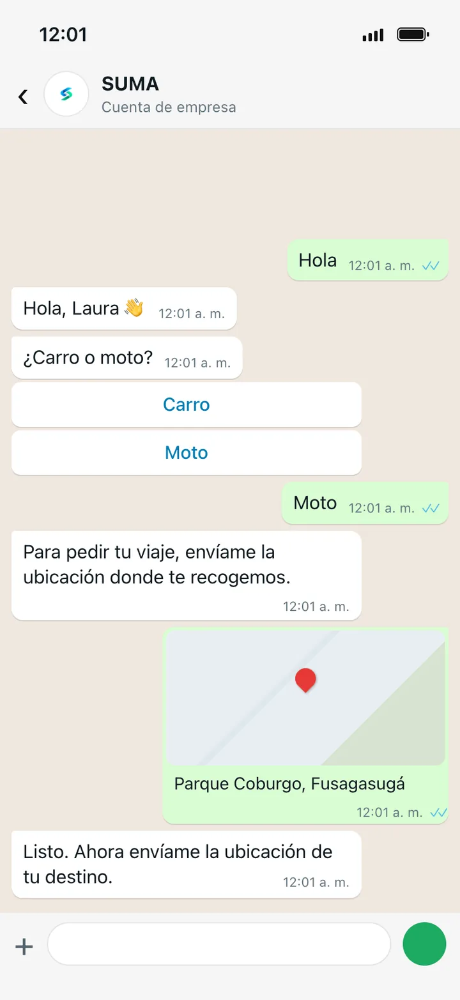
Pasajera · WhatsApp 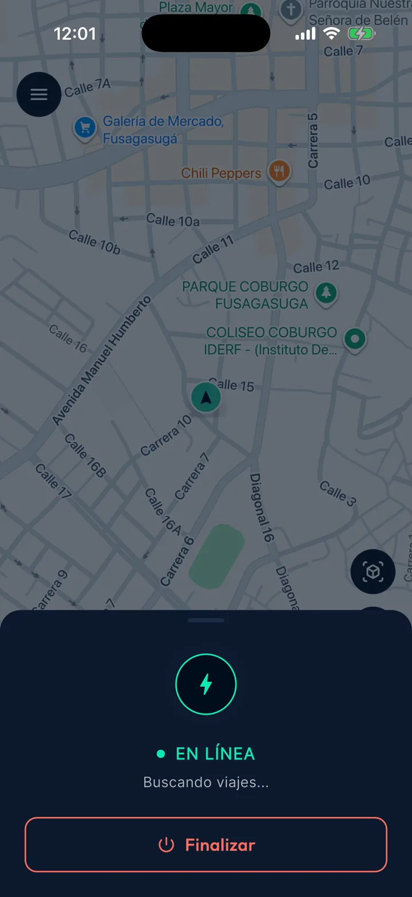
Conductor · App -
2
Confirma el precio y un conductor acepta
Con el destino, recibe un precio exacto y lo confirma. La oferta le llega al conductor más cercano conectado con una moto, con la distancia, el precio y la comisión que se le descontará.
En el sistema: La API calcula la ruta y cotiza con los tramos de distancia de las motos. Cada oferta se reserva de forma atómica y el conductor tiene 40 segundos para responder; dos conductores nunca toman el mismo viaje.
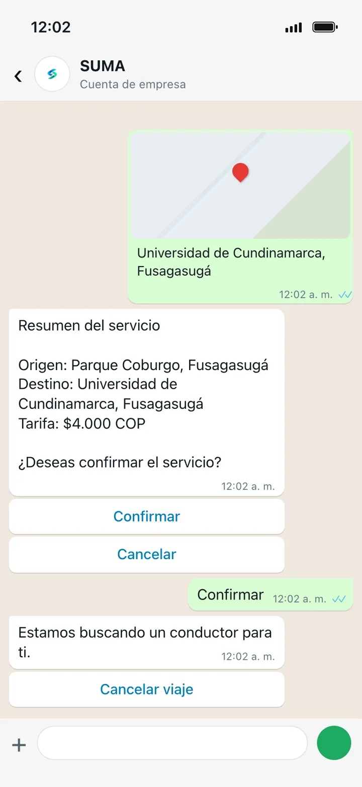
Pasajera · WhatsApp 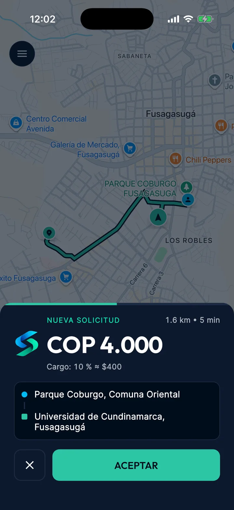
Conductor · App -
3
Recogida verificada
La pasajera recibe el nombre del conductor, la placa, un código de 4 dígitos y el enlace para seguir el viaje. Escanea el QR de la moto, en el tanque, y el del casco; el conductor ingresa el código para empezar.
En el sistema: El código se genera al asignar el viaje y la API lo valida, con intentos limitados, antes de iniciarlo.
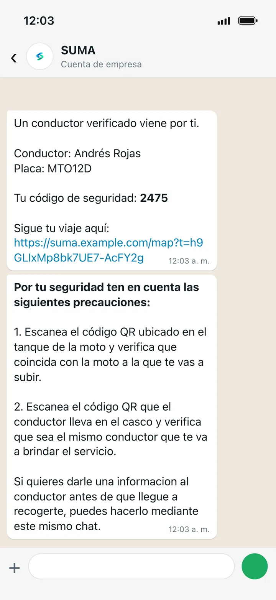
Pasajera · WhatsApp 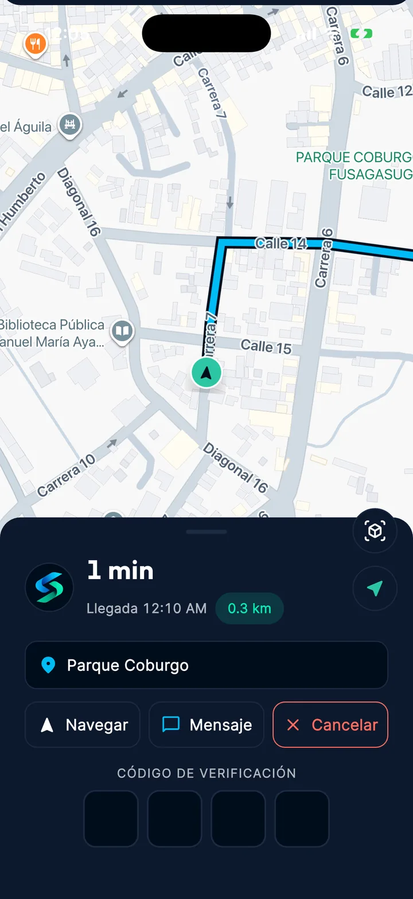
Conductor · App -
4
Camino al destino
El conductor sigue la ruta en la app, o en Waze o Google Maps si prefiere. La pasajera ve la moto en vivo desde el enlace del chat.
En el sistema: La app envía su ubicación cada 15 segundos; la página de seguimiento pide una actualización a la vez y corta a los pocos segundos si la API no responde.
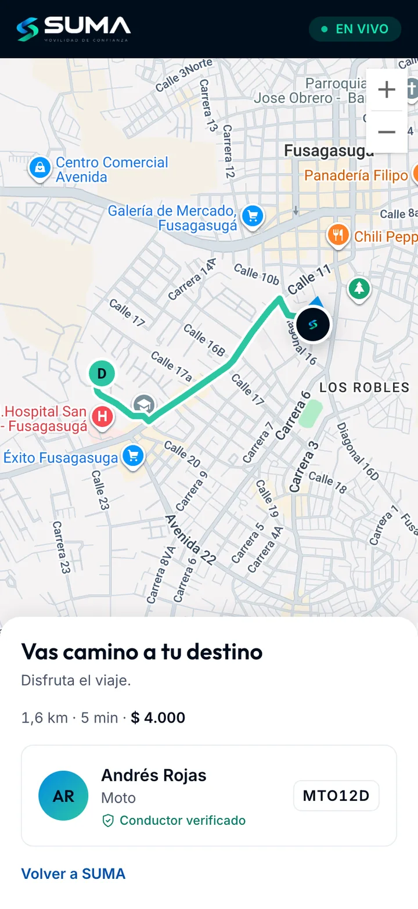
Pasajera · Web 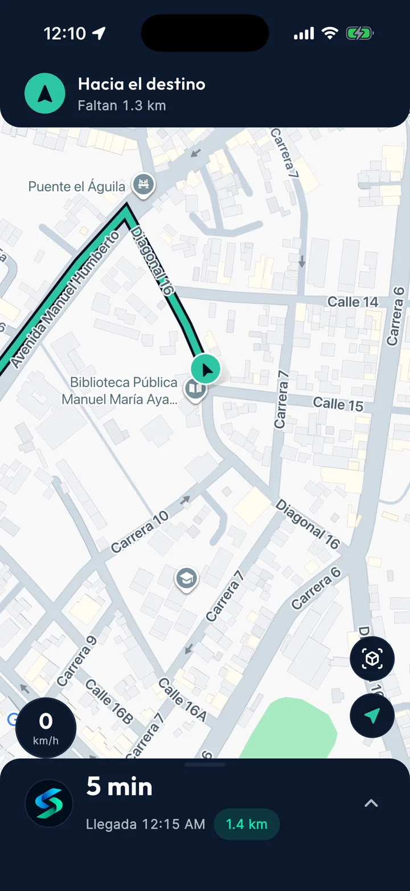
Conductor · App -
5
Llegada, pago y calificación
Al llegar, la pasajera paga en efectivo el precio acordado y ambos se califican. Del saldo del conductor se descuenta la comisión del viaje.
En el sistema: El precio final es el cotizado. La comisión se descuenta una sola vez por viaje, aunque la app reintente, y cada movimiento del saldo queda registrado.
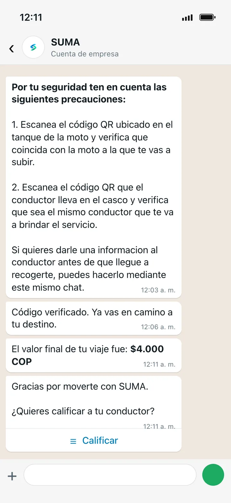
Pasajera · WhatsApp 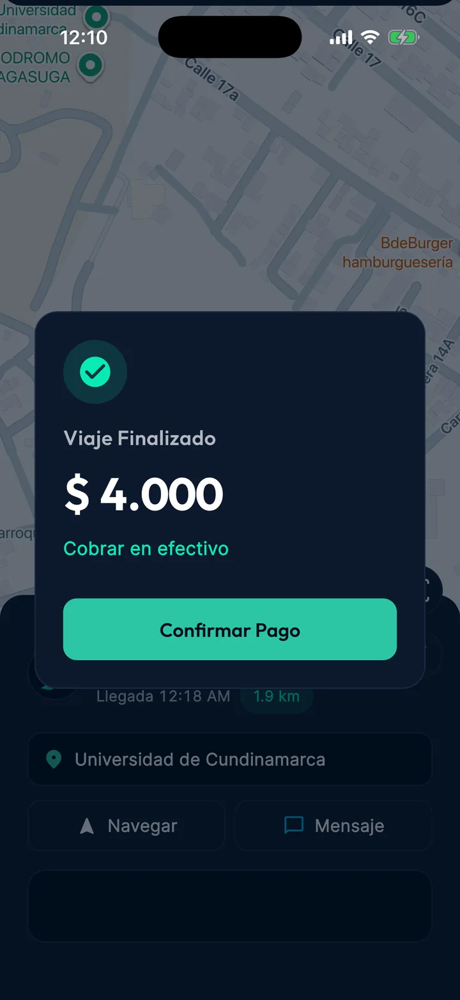
Conductor · App
Las pantallas de WhatsApp son una recreación con los mensajes reales del bot. Todos los datos son de demostración.
Para los conductores
La misma app con la que reciben viajes les sirve para elegir vehículo, recargar saldo y ver la comisión de cada viaje antes de aceptarlo.
Carro o moto, según la jornada
Un conductor puede registrar carros y motos, o manejar el vehículo de otro dueño que lo invite. Al conectarse elige con cuál trabaja ese día y solo recibe viajes de ese tipo. Cada vehículo lo usa un conductor a la vez.
Saldo prepago
Recarga desde la app con Nequi, PSE o tarjeta a través de Wompi, y cada recarga aprobada deja su comprobante. Si paga por otro medio, el equipo de SUMA le abona el saldo desde el panel.
Una comisión por viaje
Por cada viaje completado se descuenta del saldo una comisión: un valor fijo o un porcentaje de la tarifa, según el tipo de vehículo. La solicitud le muestra cuánto es antes de aceptar, los viajes cancelados no pagan y, si el saldo no alcanza, ese viaje no le llega. El pasajero le paga directamente al conductor.
En el sistema: Se cobra la comisión vigente cuando el conductor aceptó el viaje; un cambio en el panel no altera los viajes que ya están en curso.
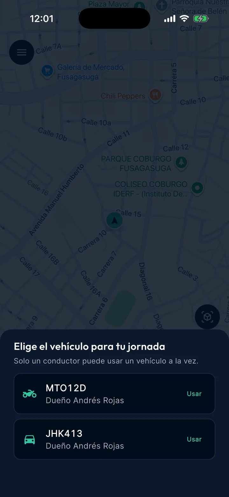
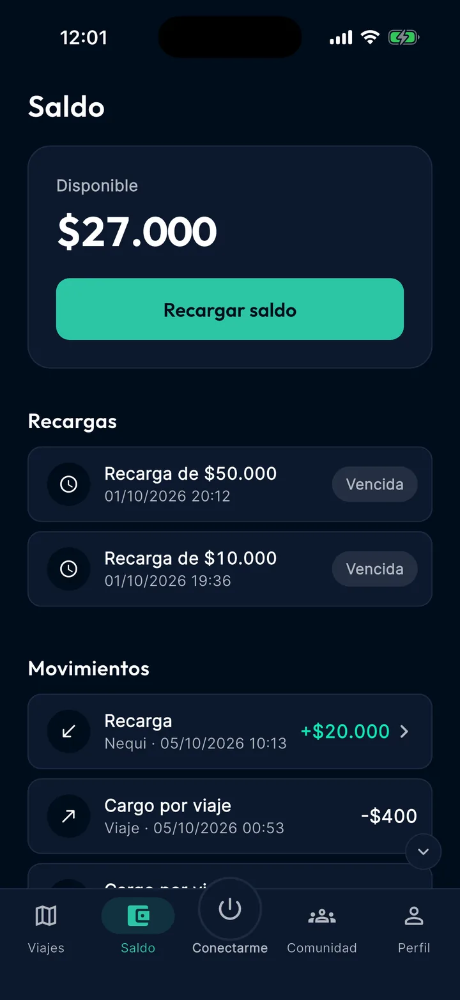
Panel de operación
El equipo valida conductores y vehículos, define las tarifas, los recargos y la comisión de cada tipo de vehículo, y revisa las recargas de saldo.


Arquitectura
- Bases separadas por dominio: usuarios, viajes y clientes, cada una con sus migraciones.
- Estados del viaje con bloqueo optimista: si dos acciones llegan a la vez, solo una gana y la otra recibe un conflicto claro.
- Saldo con bloqueo de fila y cobros idempotentes: cada viaje se cobra una sola vez.
- Tiempo real en Redis: ofertas, disponibilidad y candados de vehículo con operaciones atómicas.
- Tiempos máximos en todo: si la base de datos o un servicio externo se pone lento, la API responde con un error en vez de quedarse esperando.
- Dos auditorías internas, de seguridad y de concurrencia, con cada corrección cubierta por un test.